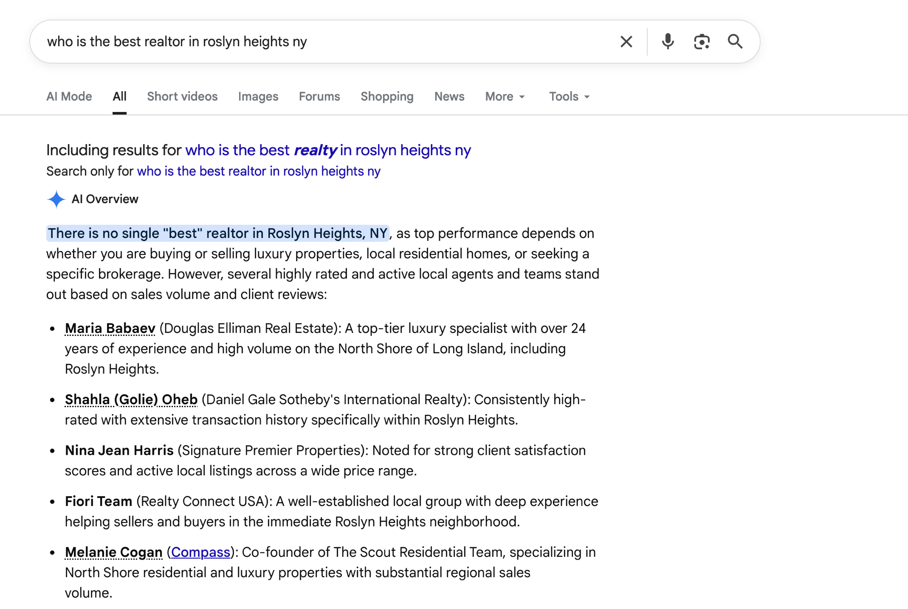
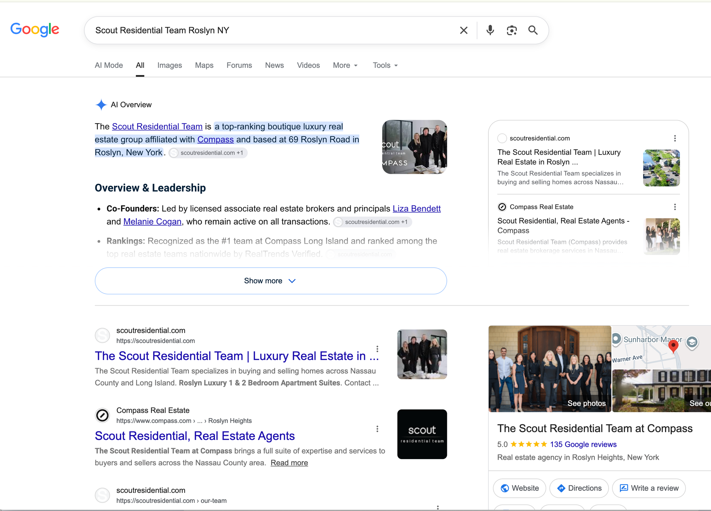
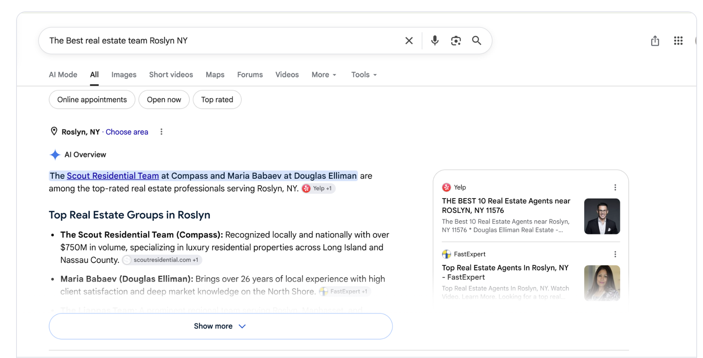
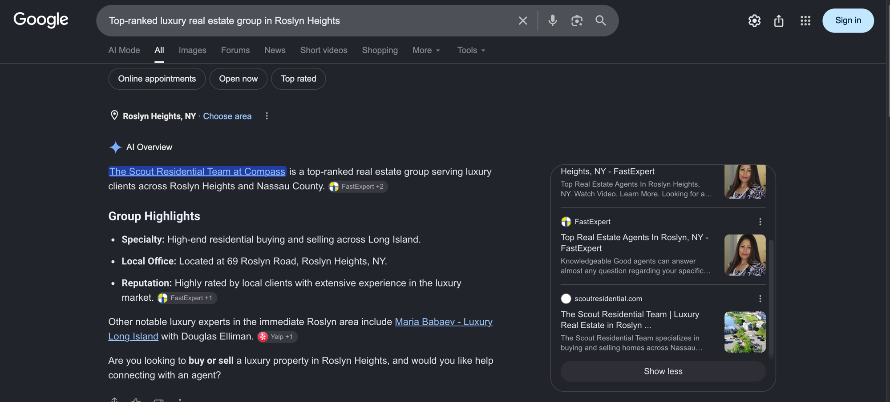
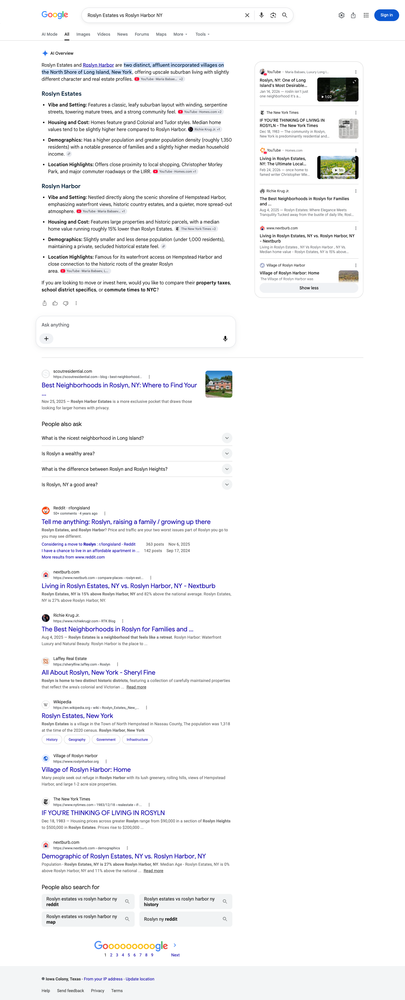

August 2026 | The Scout Residential Team
Executive summary
Google named Melanie among the agents it lists for the best realtor in Roslyn Heights. Read on August 29 from inside Roslyn Heights, Google wrote an AI answer to who the best realtor there is, declined to name a single one, and listed five people. Melanie Cogan is one of them, described as co-founder of The Scout Residential Team. On a search for the team name it goes further: it names both co-founders, restates the Compass Long Island ranking, and cites scoutresidential.com three times inside the answer.
Those answers are being built from the pages we wrote for you. The lines Google is using are ours. The office at 69 Roslyn Road, the co-founder and team principal wording for Melanie, the Compass Long Island and RealTrends Verified ranking: all of it sits on the team page and the two co-founder bios BLOK published, and Google cites scoutresidential.com on the lines that carry it. Across the engines this month the team page, both co-founder bios, the Roslyn guide and the East Hills guide are all being carried as sources.
Citation matrix
✓ Cited: your site is among the sources that answer drew on
– Not cited in the reading for that column
◦ Google did not generate an AI Overview for this question, so there was no AI answer to be cited in
| Buyer question | Google AI Overview | Perplexity | ChatGPT | |
|---|---|---|---|---|
| Scout Residential Team Roslyn NYscoutresidential.com | ✓ | ✓ | ✓ | |
| Best real estate team on the North Shore of Long Islandscoutresidential.com | – | ✓ | ✓ | |
| Roslyn Estates vs Roslyn Harbor NYscoutresidential.com | ✓ | ✓ | – | |
| Roslyn NY neighborhood guidescoutresidential.com | – | ✓ | – | |
| Living in East Hills NYscoutresidential.com | – | ✓ | – | |
| Selling a home in Roslyn NY | – | – | – | |
| Best places to live on the North Shore of Long Island | – | – | – |
Reading the matrix. Google wrote an AI answer on all seven questions, drew on a page of yours for two of them, and assembled the other five from other sources. The two it drew on you for are your own team name and the Roslyn Estates and Roslyn Harbor comparison. One note on how the team-name row is scored: from our fixed reading location outside New York Google writes no Overview on that question at all, and the reading that scores it is the one your own team took on August 29, shown in full above. It is the only row in this report scored from a capture we did not take ourselves, and it is marked that way rather than blended silently into the rest. The shape of the questions is the useful part: the engines write answers about places, choices and who is best, and your pages were among the sources on the Roslyn cluster and on your own name.
How to read this. The questions tracked here are the ones your content architecture was built around: your team name, the villages of the Roslyn area, and the goal question about the best team on the North Shore. Google displays this site as scoutresidential.com, so that is the name to look for in a source list. Every tracked reading here was taken from one connection outside New York, held constant so that the months compare cleanly against each other. Google localises AI Overviews, so a buyer searching from inside Nassau County can be shown a different answer; three readings taken from inside your own market are shown further down, outside the counts. Two things are worth knowing about how to read the columns. Perplexity and ChatGPT were read on multiple days between August 19 and August 25. Google’s AI Overview column is different: it is a single reading of each question taken on August 29, read from the page itself rather than across the month, so treat it as a snapshot. A dash there means your site was not among the sources Google showed on that one reading, which is not the same as being absent for the month. Second, all three engines rebuild their answers on every run and Google localizes its answers by where the search is run from, so a check mark means your site was among the sources on at least one reading in that window, not that it appears on every run. The reverse matters just as much: a question without a mark is one we have not seen you carried on yet, not a settled absence, because a different reading on a different day can return a different set of sources. Source lists were read as first rendered, so any list of sources named here is what the engine showed first, not a complete inventory.
Google AI Overviews, read from your own market
This section comes first because it is the most important thing that happened this month, and it comes with a caution attached. Every measured reading in the rest of this report is taken from a single connection held constant well outside New York, which is how the months are kept comparable. Google localises AI Overviews, so reading from one fixed place is deliberately conservative on local questions. The four readings below were taken by your own team on August 29. Two of them were taken with the search area set to Roslyn Heights, which the screenshot shows. Three are on related phrasings rather than on the seven tracked questions. The fourth is a tracked question, your own team name, and on that one your reading disagrees with ours: Google writes an answer there that our fixed-location reading does not see, on any run. They are shown as evidence rather than as measurement, and the three untracked ones change no count, tile or table anywhere in this report.




Held against the same engine on the same day, the difference between these three readings and the tracked column is the location they were read from. That does not make the tracked column wrong; it makes it the conservative floor, which is what a figure you can hold August against next August has to be. It does mean the answer a buyer in Roslyn actually sees is warmer toward your team than the tracked column on its own can claim. From September the tracked Google captures will be pinned to your market so the column measures what your buyers see, and the first month of that change will not be comparable with this one.
In the luxury reading Google states your team’s standing, its volume, its REALM membership and its RealTrends recognition, and then shows Yelp and FastExpert as where it got them. In the realtor reading it names your co-founder and links to Compass. Both are the same structural gap: the claims exist, the evidence for them lives on someone else’s domain, and your own site is not the record Google reaches for. Nothing here is a content gap in the ordinary sense, because the content already ranks. It is an evidence gap, and it is fixable on pages you already control.
Perplexity
Perplexity carries your site on more of these questions than either of the other two engines. It carries scoutresidential.com on five of the seven questions: your team name, the best team on the North Shore, the Roslyn neighborhood guide question, the comparison between Roslyn Estates and Roslyn Harbor, and living in East Hills. Four of those five are questions about the market and the villages rather than searches for your name, which is the harder kind to be carried on.
| Buyer question | Status | Your page carried as the source |
|---|---|---|
| Scout Residential Team Roslyn NY | Cited | Home page Liza Bendett profile page Melanie Cogan profile page and two more |
| Best real estate team on the North Shore of Long Island | Cited | Home page |
| Roslyn Estates vs Roslyn Harbor NY | Cited | Roslyn neighborhoods guide Roslyn homes, villages and market guide |
| Roslyn NY neighborhood guide | Cited | Roslyn neighborhoods guide Roslyn homes, villages and market guide |
| Living in East Hills NY | Cited | East Hills village guide |
Google AI Overviews
Google is selective about when it writes an AI Overview at all, and on this set it wrote one on all seven of them in the readings taken. On two of them it built the answer partly from a page of yours, your team name and the Roslyn Estates and Roslyn Harbor comparison. On the other five the sources it drew on sit on other domains. That is open ground rather than a verdict, and the shape of it is the useful part: an answer that is already being assembled is an answer with a slot in it.
| Buyer question | Status | Your page carried as the source |
|---|---|---|
| Scout Residential Team Roslyn NY | Cited | Team profile post the page on your site that answers it |
| Roslyn Estates vs Roslyn Harbor NY | Cited | Roslyn neighborhoods guide the page on your site that answers it |

ChatGPT
ChatGPT carries scoutresidential.com on two of the seven questions, and both of them are identity questions: a search for your team name, and the best real estate team on the North Shore of Long Island. Those are the two questions sitting closest to the goal you set, so the two that landed are the two that count for most.
| Buyer question | Status | Your page carried as the source |
|---|---|---|
| Scout Residential Team Roslyn NY | Cited | Home page |
| Best real estate team on the North Shore of Long Island | Cited | Home page |
Pages earning citations
These are the pages on scoutresidential.com that an engine carried as a source this month, eight of them in all, with the questions each one answered. Several are pages we built and published for you. Your homepage and your Roslyn neighborhood coverage are carrying citations alongside them, which is what a healthy set looks like: the answer is assembled from more than one page of yours, so no single page has to carry the team.
| Your page | Questions cited on | Questions it answered | Where to check it |
|---|---|---|---|
| Home page | 2 | Scout Residential Team Roslyn NY; Best real estate team on the North Shore of Long Island | ChatGPT, Perplexity |
| Roslyn neighborhoods guide | 2 | Roslyn Estates vs Roslyn Harbor NY; Roslyn NY neighborhood guide | Google AI Overview, Perplexity |
| Roslyn homes, villages and market guide | 2 | Roslyn Estates vs Roslyn Harbor NY; Roslyn NY neighborhood guide | Perplexity |
| Liza Bendett profile page | 1 | Scout Residential Team Roslyn NY | Perplexity |
| Melanie Cogan profile page | 1 | Scout Residential Team Roslyn NY | Perplexity |
| Team profile post | 1 | Scout Residential Team Roslyn NY | Google AI Overview, Perplexity |
| Roslyn realtor question post | 1 | Scout Residential Team Roslyn NY | Perplexity |
| East Hills village guide | 1 | Living in East Hills NY | Perplexity |
Beyond the tracked set
The seven questions in the matrix above are the set we measure every day, and the counts in this report come only from those. This table is separate. On August 29 we ran a further set of questions your pages were written to answer, questions that are not on the tracked list, to see whether the content is being used outside the set we watch. It is. Every row below is a question where an engine named a page on scoutresidential.com as a source. Perplexity was read twice and ChatGPT once, and the last column says exactly which engine and how many of those reads agreed, so you can check any row yourself. These rows are not counted in any figure or tile in this report, because they were measured on one day rather than on the standing cadence.
| Question | Page it named | Where to check it |
|---|---|---|
| Do you pay village taxes in East Hills NY on top of county and school taxes | East Hills village guide | Perplexity, one of two reads; ChatGPT |
| Top-ranked luxury real estate group in Roslyn Heights | Home page Our Team page | Perplexity, both reads; ChatGPT |
| What is the difference between Roslyn and Roslyn Heights NY | Roslyn neighborhoods guide Roslyn homes, villages and market guide | Perplexity, both reads; ChatGPT |
| What school district is East Hills NY in | East Hills village guide | Perplexity, both reads; ChatGPT |
| Who are the co-founders of the Scout Residential Team | Home page Blog index Liza Bendett profile page Melanie Cogan profile page Contact page Our Team page | Perplexity, both reads; ChatGPT |
| Is Liza Bendett a licensed real estate broker in New York | Liza Bendett profile page Melanie Cogan profile page Team profile post Our Team page | Perplexity, both reads |
| The Best real estate team Roslyn NY | Home page Roslyn realtor question post | Perplexity, both reads |
| What is my home worth on the North Shore of Long Island | North Shore seller guide | Perplexity, both reads |
| What is the difference between an incorporated village and a hamlet in Nassau County | North Shore towns and villages guide | Perplexity, both reads |
| Which school district is Flower Hill NY in | Flower Hill village guide | Perplexity, both reads |
Gaps as opportunities
Google now writes an AI answer on every one of the seven questions, and five of those seven answers were built from other sources. The questions with no citation yet on any engine are the North Shore places question and the seller question. Both have a page behind them already, which makes them sharpening work rather than contested ground. The place and community questions in that group, including the North Shore places question, get answered the same way the current set is written: factual village structure, governance and housing stock, never a ranking of places. Each card below is written against a specific open question, and the last one is the card that decides the goal you set.
The slate and the opening lines are built and the shoot is scheduled with you for September 10. Video answers the geography questions in a way writing cannot: a village boundary takes thirty seconds with a map on screen and a whole paragraph to describe badly. It also does a job the pages are not built for, which is winning the few seconds a person spends deciding what to open. This is the piece that turns an answer you are carried in into a visit.
Google wrote an AI answer for selling a home in Roslyn on the reading taken, and there is no dated local record of yours for it to reach for. Sellers are the majority of your business, and the seller content live today answers what a home is worth rather than what the transaction looks like. Three pages carry the cluster: how long homes are taking to sell by village, as a dated table refreshed quarterly; what a North Shore seller nets at closing; and how a Roslyn home is priced by village and property type, drawn from your own closed transactions. The last one is the precision no one else can copy, because it comes out of your own book.
The North Shore market report is written and packaged, and it goes live as soon as the closed-volume figure in the last card is confirmed with you. A dated, refreshed data asset is the format the seller and market questions reward, because an engine looking for a current local number has very little that is genuinely local to reach for. Published on a quarterly rhythm it feeds the seller cluster above rather than sitting beside it, and each edition gives the engines a fresher record than the one they used last time.
Several of the questions with no citation on these readings are community and place searches, and the places behind the sharpest of them have no page on your site yet. The Links at North Hills leads that list, because it is where your relationship depth is greatest and where there is no dedicated page yet. Sands Point and Old Westbury sit behind it. The Roslyn cluster gets finished in the same pass, with dedicated pages for Roslyn Estates, Roslyn Harbor and Roslyn Heights, so that the Roslyn comparison question is answered by a page written for it rather than by a general guide. All of it holds to the same discipline as the current set: factual community structure, governance, housing stock, amenities, and district boundaries strictly as a matter of zoning, never a comparison or a ranking of places.
Your stated goal is to be the team the engines reach for on the North Shore, and that is an entity problem rather than a coverage problem. August already shows the coverage half working: the goal question is carried on two engines by your own homepage. What is left is consistency. Two details still read differently across the sources an engine cross-checks, your 2025 closed volume and whether your office is described as Roslyn or Roslyn Heights, and when two sources an engine trusts disagree about the same fact, the safe move for the engine is to commit to neither. Both are single decisions from you, and both are still open from the confirmations we sent you. Beside them sits the off-site work: your record needs to exist somewhere other than your own domain, in the regional sources and verification records these engines already read. That is the lever that moves ChatGPT, and it runs in parallel with everything above.